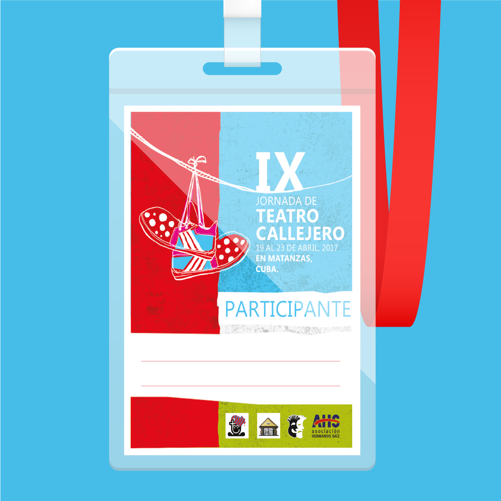
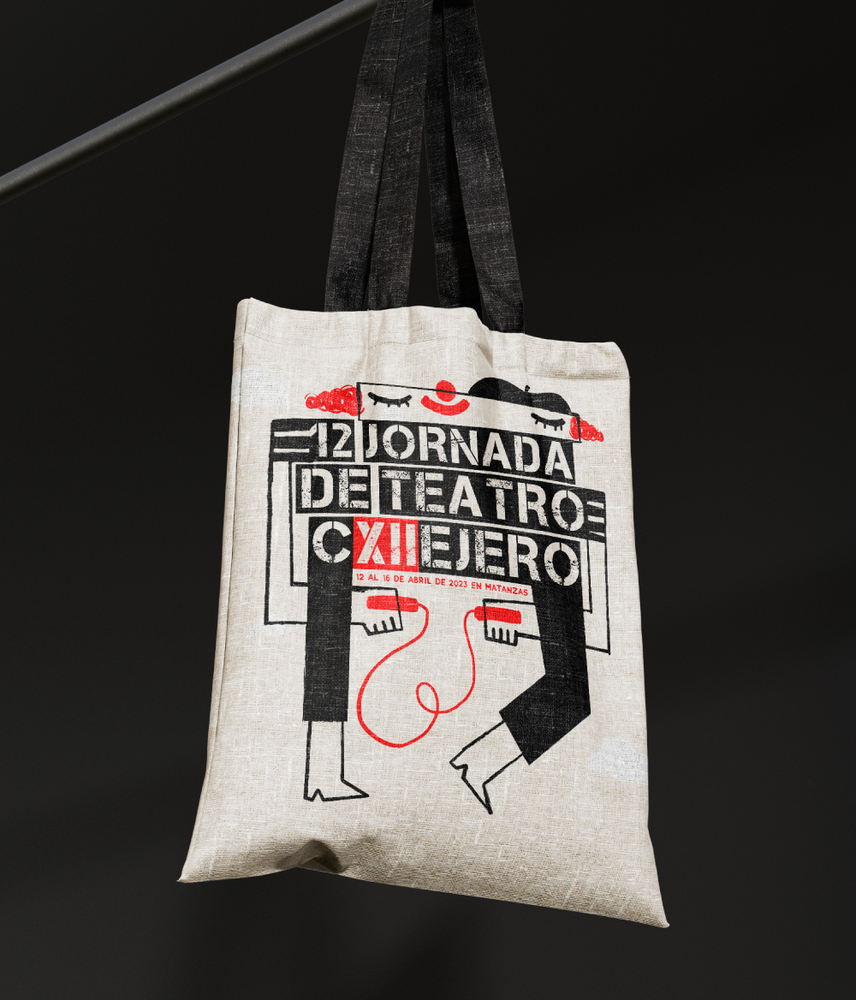

BRINGING ACTORS AND DIRECTOR'S VISION TO LIFE THROUGH SHAPES AND COLORS IS AN AMAZING EXPERIENCE,
FROM THE MAGIC OF CHILDREN'S PUPPET THEATER TO THE COMPLEXITY OF ADULT'S SCENE.
THE "FESTIVAL DE TEATRO ROSA" (PINK THEATER FEST)
IS ONE OF CUBA'S FIRST LGBT THEATER FESTIVALS so, at the time, WAS STILL kind of A CONTROVERSIAL event FOR some of the most conservative audience.
i welcomed the great risponsability of contributing with this very IMPORTANT community's acknowledgement and respect. then, I OPTED FOR A DIRECT MESSAGE,
THROUGH A SIMPLE YET MEANINGFUL IMAGE with obvious symbolism and SPIKED WITH HUMOR, in order TO CELEBRATE THE PRIDE AND
BRAVERY OF THIS FEST'S organizers and PARTICIPANTS...
CALLEJERO IX

FOR A FEW CONSECUTIVE YEARS I HAD THE PLEASURE OF DESIGNING THE GRAPHIC IMAGE AND MAKING THE TV SPOTS OF “EL CALLEJERO”, WHICH IS WHAT THE INTERNATIONAL
STREET THEATER FESTIVAL OF MATANZAS, IN CUBA, IS LOVINGLY KNOWN. IT IS A VERY RENOWNED EVENT IN THE COUNTRY AND IN
OTHER PLACES OF THE WORLD WHERE STREET THEATER IS MADE AND RESPECTED. CONCEIVING THE VISUALS OF THE SAME FESTIVAL IN DIFFERENT
EDITIONS WAS VERY INTERESTING FROM A CREATIVE POINT OF VIEW SINCE IT FORCED ME TO LOOK FOR DIFFERENT GRAPHIC SOLUTIONS TO THE SAME TOPIC...
CALLEJERO X
FOR THIS 10TH EDITION OF THE FESTIVAL, I SELECTED A MORE URBAN / UNDERGROUND INSPIRED GRAPHIC STYLE, USING FONETIC WORDPLAY AND VIBRANT
COLORS THIS TIME IN ORDER TO ENGAGE A WIDER SPAN OF AUDIENCE. THE EVENT ITSELF HAD GROWN A LOT AND ATTRACTED
MORE NEW FOREIGN PARTICIPANTS, WITH MANY DIFFERENT THEATRICAL PROPOSALS SUITABLE FOR ALL KINDS OF PUBLIC...
CALLEJERO XII

THE POST-PANDEMIC EDITION WAS OF COURSE SMALLER AND SHORTER BUT IT REALLY MEANT A LOT
FOR EVERY ACTOR AND PERFORMER THAT FINALLY COULD BE BACK ON THE STREETS. ONCE AGAIN I GOT THE
CHANCE TO CREATE THE FESTIVAL'S GRAPHICS, AND THIS TIME I TRIED TO REPRESENT THAT MIX OF CURFEW
SADNESS AND THE NEW OUTDOOR JOY IN A MORE SIMPLE WAY...
CHILDREN STORIES
DURING THE NECESSARY CURFEW PERIOD IN TIMES OF THE PANDEMICS, MANY ACTIVITIES OF OUR EVERYDAY LIFE HAD TO CHANGE AND ADJUST
IN ORDER TO KEEP THINGS RUNNING; THE MAGICAL WORK OF THEATER ENTERTAINMENT FOR CHILDREN WAS NO EXCEPTION. "TEATRO EL MIRON CUBANO",
A PRESTIGIOUS THEATER GROUP FROM CUBA, CONSIDERED THE POSSIBILITY OF AN ONLINE APPROACH
AND THEN TRANSFORMED STAGE PLAYS INTO POSTS AND STORIES; WHICH I HAD THE PLEASURE OF ILLUSTRATING AND PROMOTING
THROUGH A FEW SIMPLE ANIMATED ADS...